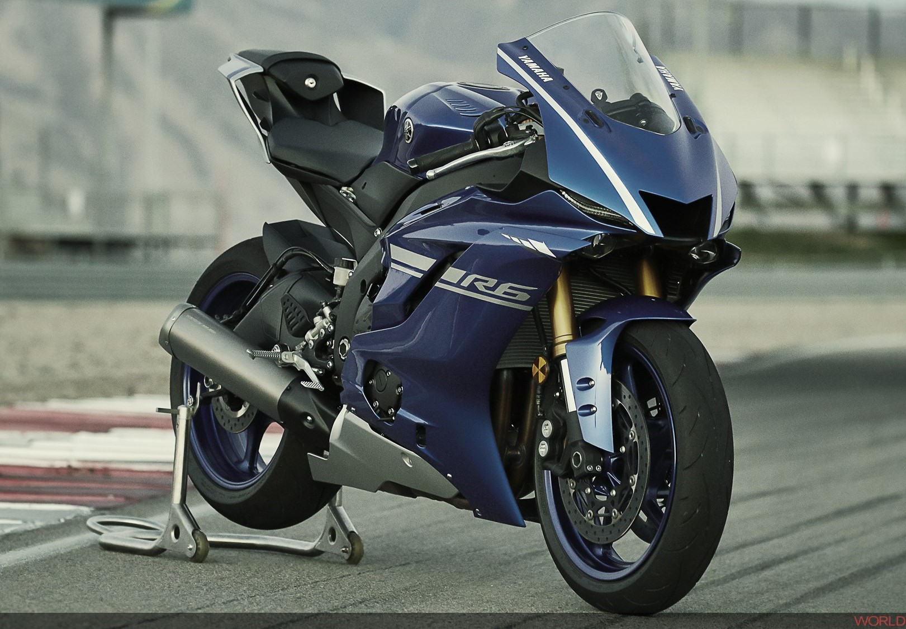

MIGLIOR PRODOTTO IN COMMERCIO

La Yamaha YZF-R6 del 2022 è una moto supersportiva iconica che porta avanti la tradizione della linea R6 della Yamaha. Con un motore da 599 cc a
quattro cilindri in linea, è progettata per offrire prestazioni elevate sia su strada che in pista. Con un telaio leggero e maneggevole, sospensioni
avanzate e una carenatura aerodinamica, è una moto progettata per offrire una guida sportiva e coinvolgente. Esteticamente, presenta un design
aggressivo con linee affilate e una posizione di guida racing. Dato l'alto numero di cavalli la moto richiede elevata esperienza di guida da parte del motociclista,
in quanto può diventare molto pericolosa. Rimane una delle migliori moto in circolazione nel settore delle sportive.
SCHEDA TECNICA
Nome: Yamaha r6 2022
Cilindrata: 599cc
Motore: 4 tempi
Cambio: 6 marce
Utilizzo: strada/pista
Capacità serbatoio: 17 l
Cavalli: 118.5 cv
Emissioni: euro 5
Peso: 190 kg
Prezzo: 14199 euro